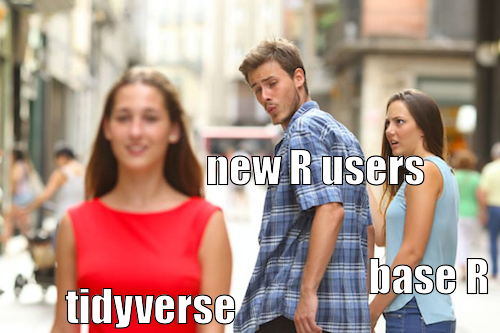

2 Introduction to tidyverse and data wrangling
2.1 Opening and exploring data
2.1.1 Styles of R coding
Up to this point, we have not thought about the style of R coding we will be using. There are different approaches to R coding that we can use, they can be thought of as different dialects of the R programming language.
The choice of R ‘dialect’ depends on personal preference. Some prefer to use the ‘base R’ approach that does not rely on any packages that may need updating, making it a more stable approach. However, base R can be difficult to read for those not comfortable with coding.
The alternative approach that we will be adopting in this course is the ‘tidyverse’ approach. Tidyverse is a set of packages that have been designed to make R coding more readable and efficient. They have been designed with reproducibility in mind, which means there is a wealth of online (mostly free), well-written resources available to help use these packages.
If you have not done so already, install the tidyverse packages to your machine using the following code:
install.packages('tidyverse')
Warning
This can take a long time if you have never downloaded the tidyverse packages before as there are many dependencies that are required. Do not stress if you get a lot of text in the console! This is normal, but watch out for any error messages.
Once the tidyverse package is installed, we must load it into the current working session. At the beginning of your script file add the following syntax:
library(tidyverse)
Style tip
Begin every script file with the library command, loading packages in before any data. This avoids any potential errors arising where functions are called before the necessary package has been loaded into the current session.
2.1.2 The working directory
The working directory is a file path on your computer that R sets as the default location when opening, saving, or exporting documents, files, and graphics. This file path can be specified manually but setting the working directory saves time and makes code more efficient.
The working directory can be set manually by using the Session -> Set Working Directory -> Change Directory… option from the drop-down menu, or the setwd function. Both options require the directory to be specified each time R is restarted, are sensitive to changes in folders within the file path, and cannot be used when script files are shared between colleagues.
An alternative approach that overcomes these issues is to create an R project.
2.1.2.1 R projects
R projects are files (saved with the .Rproj extension) that keep associated files (including scripts, data, and outputs) grouped together. An R project automatically sets the working directory relative to its current location, which makes collaborative work easier, and avoids issues when a file path is changed.
Projects are created by using the File -> New project option from the drop-down menu, or using the  icon from the top-right corner of the RStudio interface. Existing projects can be opened under the File -> Open project… drop-down menu or using the project icon.
icon from the top-right corner of the RStudio interface. Existing projects can be opened under the File -> Open project… drop-down menu or using the project icon.
When creating a new project, we must choose whether we want to create a new directory or use an existing one. Usually, we will have already set up a folder containing data or other documents related to the analysis we plan to carry out. If this is the case, we are using an existing directory and selecting the analysis folder as the project directory.
Style tip
Have a clear order to your analysis folder. Consider creating separate folders within a project for input and output data, documentation, and outputs such as graphs or tables.
2.2 Data input
To ensure our code is collaborative and reproducible, we should strive to store data in formats that can be used across multiple platforms. One of the best ways to do this is to store data as a comma-delimited file (.csv). CSV files can be opened by a range of different softwares (including R, SPSS, STATA and excel), and base R can be used to open these files without requiring additional packages.
Before loading files in R, it is essential to check that they are correctly formatted. Data files should only contain one sheet with no pictures or graphics, each row should correspond to a case or observation and each column should correspond to a variable.
To avoid any errors arising from spelling mistakes, we can use the list.files function to return a list of files and folders from the current working directory. The file names can be copied from the console and pasted into the script file. As the data are saved in a folder within the working directory, we must add the argument path = to specify the folder we want to list files from.
list.files(path = "data")
## [1] "CSP_2015.csv" "CSP_2016.csv" "CSP_2017.csv"
## [4] "CSP_2018.csv" "CSP_2019.csv" "CSP_2020.csv"
## [7] "CSP_long_201520.csv" "data_description.pdf"This list should contain 6 CSV files with the core spending power in local authorities in England between 2015 and 2020. We will first load and explore the 2020 data using the read_csv function and attaching the data to an object. Remember to add the data folder to the file name.
csp_2020 <- read_csv("data/CSP_2020.csv")Imported datasets will appear in the Environment window of the console once they are saved as objects. This Environment also displays the number of variables and observations in each object. To preview the contents of an object, click on its name in the Environment window or use the function View(data).
Other useful functions that help explore a dataset include:
# Return variable names from a dataset object
names(csp_2020)
## [1] "ons_code" "authority" "region" "sfa_2020"
## [5] "under_index_2020" "ct_total_2020" "nhb_2020" "nhb_return_2020"
## [9] "rsdg_2020"
Style tip
Variable names should follow the same style rules as object names: only contain lower case letters, numbers, and use _ to separate words. They should be meaningful and concise.
# Display information about the structure of an object
str(csp_2020)
## spc_tbl_ [396 × 9] (S3: spec_tbl_df/tbl_df/tbl/data.frame)
## $ ons_code : chr [1:396] "E07000223" "E07000026" "E07000032" "E07000224" ...
## $ authority : chr [1:396] "Adur" "Allerdale" "Amber Valley" "Arun" ...
## $ region : chr [1:396] "SE" "NW" "EM" "SE" ...
## $ sfa_2020 : num [1:396] 1.77 3.85 3.23 3.67 4.08 ...
## $ under_index_2020: num [1:396] 0.0708 0.1465 0.1292 0.147 0.1557 ...
## $ ct_total_2020 : num [1:396] 6.53 5.4 6.85 11.61 6.42 ...
## $ nhb_2020 : num [1:396] 0.0881 0.6061 1.5786 2.2949 1.1547 ...
## $ nhb_return_2020 : num [1:396] 0 0 0 0 0 0 0 0 0 0 ...
## $ rsdg_2020 : num [1:396] 0 0.326 0 0 0 ...
## - attr(*, "spec")=
## .. cols(
## .. ons_code = col_character(),
## .. authority = col_character(),
## .. region = col_character(),
## .. sfa_2020 = col_double(),
## .. under_index_2020 = col_double(),
## .. ct_total_2020 = col_double(),
## .. nhb_2020 = col_double(),
## .. nhb_return_2020 = col_double(),
## .. rsdg_2020 = col_double()
## .. )
## - attr(*, "problems")=<externalptr>Output from the str function differs depending on the type of object it is applied to. For example, this object is a tibble (tbl, Tidyverse’s name for a dataset). The information given about tibbles includes the object dimensions (396 x 9, or 396 rows and 9 columns), variable names, and variable types.
It is important to check that R has correctly recognised variable type when data are loaded, before generating any visualisations or analysis. If variables are incorrectly specified, this could either lead to errors or invalid analyses. We will see how to change variables types later in this session.
# Return the first 6 rows of the tibble
head(csp_2020)
## # A tibble: 6 × 9
## ons_code authority region sfa_2020 under_index_2020 ct_total_2020 nhb_2020
## <chr> <chr> <chr> <dbl> <dbl> <dbl> <dbl>
## 1 E07000223 Adur SE 1.77 0.0708 6.53 0.0881
## 2 E07000026 Allerdale NW 3.85 0.147 5.40 0.606
## 3 E07000032 Amber Valley EM 3.23 0.129 6.85 1.58
## 4 E07000224 Arun SE 3.67 0.147 11.6 2.29
## 5 E07000170 Ashfield EM 4.08 0.156 6.42 1.15
## 6 E07000105 Ashford SE 2.88 0.115 7.92 3.05
## # ℹ 2 more variables: nhb_return_2020 <dbl>, rsdg_2020 <dbl># Return the final 6 rows of the tibble.
tail(csp_2020)
## # A tibble: 6 × 9
## ons_code authority region sfa_2020 under_index_2020 ct_total_2020 nhb_2020
## <chr> <chr> <chr> <dbl> <dbl> <dbl> <dbl>
## 1 E07000229 Worthing SE 2.69 0.108 9.52 0.961
## 2 E07000238 Wychavon WM 2.65 0.106 6.29 4.73
## 3 E07000007 Wycombe SE 0 0 0 0
## 4 E07000128 Wyre NW 3.41 0.137 7.64 1.28
## 5 E07000239 Wyre Forest WM 2.84 0.114 7.45 0.262
## 6 E06000014 York YH 27.1 1.06 93.8 2.68
## # ℹ 2 more variables: nhb_return_2020 <dbl>, rsdg_2020 <dbl>2.2.1 Selecting variables
Often, our analysis will not require every variable in a downloaded dataset, and we may wish to create a smaller analysis tibble. We may also wish to select individual variables from the tibble to apply functions to them without including the entire dataset.
To select one or more variable and return them as a new tibble, we can use the select function from tidyverse’s dplyr package.
For example, if we wanted to return the new homes bonus (nhb) for each local authority (the seventh column of the dataset), we can either select this based on the variable name or its location in the object:
# Return the nhb_2020 variable from the csp_2020 object
select(csp_2020, nhb_2020)
## # A tibble: 396 × 1
## nhb_2020
## <dbl>
## 1 0.0881
## 2 0.606
## 3 1.58
## 4 2.29
## 5 1.15
## 6 3.05
## 7 0
## 8 0
## 9 1.05
## 10 1.85
## # ℹ 386 more rows
# Return the 7th variable of the csp_2020 object
select(csp_2020, 7)
## # A tibble: 396 × 1
## nhb_2020
## <dbl>
## 1 0.0881
## 2 0.606
## 3 1.58
## 4 2.29
## 5 1.15
## 6 3.05
## 7 0
## 8 0
## 9 1.05
## 10 1.85
## # ℹ 386 more rowsWe can select multiple variables and return them as a tibble by separating the variable names or numbers with commas:
# Return three variables from the csp_2020 object
select(csp_2020, ons_code, authority, region)
## # A tibble: 396 × 3
## ons_code authority region
## <chr> <chr> <chr>
## 1 E07000223 Adur SE
## 2 E07000026 Allerdale NW
## 3 E07000032 Amber Valley EM
## 4 E07000224 Arun SE
## 5 E07000170 Ashfield EM
## 6 E07000105 Ashford SE
## 7 E31000001 Avon Fire SW
## 8 E07000004 Aylesbury Vale SE
## 9 E07000200 Babergh EE
## 10 E09000002 Barking And Dagenham L
## # ℹ 386 more rowsWhen selecting consecutive variables, a shortcut can be used that gives the first and last variable in the list, separated by a colon, :. The previous example can be carried out using the following code:
# Return variables from ons_code upt to and including region
select(csp_2020, ons_code:region)
## # A tibble: 396 × 3
## ons_code authority region
## <chr> <chr> <chr>
## 1 E07000223 Adur SE
## 2 E07000026 Allerdale NW
## 3 E07000032 Amber Valley EM
## 4 E07000224 Arun SE
## 5 E07000170 Ashfield EM
## 6 E07000105 Ashford SE
## 7 E31000001 Avon Fire SW
## 8 E07000004 Aylesbury Vale SE
## 9 E07000200 Babergh EE
## 10 E09000002 Barking And Dagenham L
## # ℹ 386 more rowsThe select function can also be combined with a number of ‘selection helper’ functions that help us select variables based on naming conventions:
starts_with("xyz")returns all variables with names beginningxyzends_with("xyz")returns all variables with names endingxyzcontains("xyz")returns all variables that havexyzwithin their name
Or based on whether they match a condition:
where(is.numeric)returns all variables that are classed as numeric
For a full list of these selection helpers, access the helpfile using ?tidyr_tidy_select.
The select function can also be used to remove variables from a tibble by adding a - before the variable name or number. For example:
# Remove the ons_code variable
select(csp_2020, -ons_code)
## # A tibble: 396 × 8
## authority region sfa_2020 under_index_2020 ct_total_2020 nhb_2020
## <chr> <chr> <dbl> <dbl> <dbl> <dbl>
## 1 Adur SE 1.77 0.0708 6.53 0.0881
## 2 Allerdale NW 3.85 0.147 5.40 0.606
## 3 Amber Valley EM 3.23 0.129 6.85 1.58
## 4 Arun SE 3.67 0.147 11.6 2.29
## 5 Ashfield EM 4.08 0.156 6.42 1.15
## 6 Ashford SE 2.88 0.115 7.92 3.05
## 7 Avon Fire SW 16.0 0.437 27.8 0
## 8 Aylesbury Vale SE 0 0 0 0
## 9 Babergh EE 2.14 0.0857 5.77 1.05
## 10 Barking And Dagenham L 75.7 2.31 65.8 1.85
## # ℹ 386 more rows
## # ℹ 2 more variables: nhb_return_2020 <dbl>, rsdg_2020 <dbl>The select function returns the variable(s) in the form of a tibble (or dataset). However, some functions, such as basic summary functions, require data to be entered as a vector (a list of values). Tibbles with a single variable can be converted into a vector using the as.vector function, or we can use the base R approach to selecting a single variable. To return a single variable as a vector in base R, we can use the $ symbol between the data name and the variable to return:
csp_2020$nhb_2020It is important to save any changes made to the existing dataset. This can be done using the write_csv function:
write_csv(csp_2020, file = "data/csp_2020_new.csv")
Warning
When saving updated tibbles as files, use a different file name to the original raw data. Using the same name will overwrite the original file. We always want a copy of the raw data in case of any errors or issues.
2.2.2 Filtering data
The filter function, from tidyverse’s dplyr package allows us to return subgroups of the data based on conditional statements. These conditional statements can include mathematical operators, e.g. <= (less than or equal to), == (is equal to), and != (is not equal to), or can be based on conditional functions, e.g. is.na(variable) (is missing), between(a, b) (number lies between a and b).
A more comprehensive list of conditional statements can be found in the help file using ?filter.
For example, to return the core spending power for local authorities in the North West region of England, we use the following:
# Return rows where region is equal to NW from the csp_2020 object
filter(csp_2020, region == "NW")
## # A tibble: 46 × 9
## ons_code authority region sfa_2020 under_index_2020 ct_total_2020 nhb_2020
## <chr> <chr> <chr> <dbl> <dbl> <dbl> <dbl>
## 1 E07000026 Allerdale NW 3.85 0.147 5.40 0.606
## 2 E07000027 Barrow-in-… NW 4.40 0.125 4.74 0.0111
## 3 E06000008 Blackburn … NW 58.1 1.79 55.9 0.999
## 4 E06000009 Blackpool NW 63.3 1.94 60.1 0.266
## 5 E08000001 Bolton NW 84.2 2.73 115. 0.506
## 6 E07000117 Burnley NW 5.90 0.171 7.16 0.694
## 7 E08000002 Bury NW 42.3 1.44 89.0 0.458
## 8 E07000028 Carlisle NW 3.34 0.134 7.49 1.49
## 9 E06000049 Cheshire E… NW 42.5 1.70 230. 11.2
## 10 E31000006 Cheshire F… NW 13.5 0.380 30.1 0
## # ℹ 36 more rows
## # ℹ 2 more variables: nhb_return_2020 <dbl>, rsdg_2020 <dbl>Multiple conditional statements can be added to the same function by separating them with a comma ,. For example, to return a subgroup of local authorities in the North West region that had a settlement funding assessment (SFA) of over £40 million, we use the following:
filter(csp_2020, region == "NW", sfa_2020 > 40)
## # A tibble: 23 × 9
## ons_code authority region sfa_2020 under_index_2020 ct_total_2020 nhb_2020
## <chr> <chr> <chr> <dbl> <dbl> <dbl> <dbl>
## 1 E06000008 Blackburn … NW 58.1 1.79 55.9 0.999
## 2 E06000009 Blackpool NW 63.3 1.94 60.1 0.266
## 3 E08000001 Bolton NW 84.2 2.73 115. 0.506
## 4 E08000002 Bury NW 42.3 1.44 89.0 0.458
## 5 E06000049 Cheshire E… NW 42.5 1.70 230. 11.2
## 6 E06000050 Cheshire W… NW 56.3 2.12 196. 10.2
## 7 E10000006 Cumbria NW 107. 3.56 248. 0.824
## 8 E47000001 Greater Ma… NW 50.6 1.28 50.5 0
## 9 E06000006 Halton NW 45.6 1.45 52.2 2.21
## 10 E08000011 Knowsley NW 84.1 2.50 56.8 2.10
## # ℹ 13 more rows
## # ℹ 2 more variables: nhb_return_2020 <dbl>, rsdg_2020 <dbl>2.2.3 Pipes
When creating an analysis-ready dataset, we often want to combine functions such as select and filter. Previously, these would need to be carried out separately and a new object would need to be created or overwritten at each step, clogging up the environment.
In tidyverse, we combine multiple functions into a single process by using the ‘pipe’ symbol %>%, which is read as ‘and then’ within the code.
Helpful hint
To save time when piping, use the keyboard shortcut ctrl + shift + m for Windows, and Command + shift + m for Mac to create a pipe.
For example, we can return a list of local authority names from the North West region:
# Using the csp_2020 object
csp_2020 %>%
# Return just rows where region is equal to NW, and then
filter(region == "NW") %>%
# Select just the authority variable
select(authority)
## # A tibble: 46 × 1
## authority
## <chr>
## 1 Allerdale
## 2 Barrow-in-Furness
## 3 Blackburn with Darwen
## 4 Blackpool
## 5 Bolton
## 6 Burnley
## 7 Bury
## 8 Carlisle
## 9 Cheshire East
## 10 Cheshire Fire
## # ℹ 36 more rows
Style tips
When combining multiple functions within a process using pipes, it is good practice to start the code with the data and pipe that into the functions, rather than including it in the function itself.
The pipe can also be combined with the filter function to count the number of observations that lie within a subgroup:
# Take the csp_2020 object
csp_2020 %>%
# Return just rows where region is equal to NW, and then
filter(region == "NW") %>%
# Count the number of rows
count()
## # A tibble: 1 × 1
## n
## <int>
## 1 462.2.4 Creating new variables
The function mutate from tidyverse’s dplyr package allows us to add new variables to a dataset, either by manually specifying them or by creating them from existing variables. We can add multiple variables within the same function, separating each with a comma ,.
For example, we can create a new variables with the squared settlement funding assessment (sfa_2020), and another that recodes the council tax variable (ct_total_2020) into a categorical variable with three levels (low: below £5 million, medium: between £5 million and £15 million, and high: above £15 million):
# Create a new object, csp_2020_new, starting with the object csp_2020
csp_2020_new <- csp_2020 %>%
# Add a new variable, sfa_2020_sq, by squaring the current sfa_2020 variable
mutate(sfa_2020_sq = sfa_2020 ^ 2,
# Create ct_2020-cat by cutting the ct_total_2020 object
ct_2020_cat = cut(ct_total_2020,
# Create categories by cutting at 0, 5 and 15
breaks = c(0, 5, 15, Inf),
# Add labels to these new groups
labels = c("Low", "Medium", "High"),
# Include the lowest break point in each group
include_lowest = TRUE))
Helpful hint
The c function takes a list of values separated by commas and returns them as a vector. This is useful when a function argument requires multiple values (and we don’t want R to move onto the next argument, which is what a comma inside functions usually means).
The mutate function is also useful for reclassifying variables when R did not correctly choose the variable type. In this example, the region variable is a grouping variable, but str(csp_2020) shows it is recognised by R as a character. Grouping variables in R are known as factors. To convert the region variable to a factor, we use the factor function inside mutate:
csp_2020_new <- csp_2020 %>%
# Add a new variable, sfa_2020_sq, by squaring the current sfa_2020 variable
mutate(sfa_2020_sq = sfa_2020 ^ 2,
# Create ct_2020-cat by cutting the ct_total_2020 object
ct_2020_cat = cut(ct_total_2020,
# Create categories by cutting at 0, 5 and 15
breaks = c(0, 5, 15, Inf),
# Add labels to these new groups
labels = c("Low", "Medium", "High"),
# Include the lowest break point in each group
include_lowest = TRUE),
region_fct = factor(region,
# To order the variable, use the levels argument
levels = c("L", "NW", "NE", "YH", "WM",
"EM", "EE", "SW", "SE")))
# Check variables are correctly classified
str(csp_2020_new)
## tibble [396 × 12] (S3: tbl_df/tbl/data.frame)
## $ ons_code : chr [1:396] "E07000223" "E07000026" "E07000032" "E07000224" ...
## $ authority : chr [1:396] "Adur" "Allerdale" "Amber Valley" "Arun" ...
## $ region : chr [1:396] "SE" "NW" "EM" "SE" ...
## $ sfa_2020 : num [1:396] 1.77 3.85 3.23 3.67 4.08 ...
## $ under_index_2020: num [1:396] 0.0708 0.1465 0.1292 0.147 0.1557 ...
## $ ct_total_2020 : num [1:396] 6.53 5.4 6.85 11.61 6.42 ...
## $ nhb_2020 : num [1:396] 0.0881 0.6061 1.5786 2.2949 1.1547 ...
## $ nhb_return_2020 : num [1:396] 0 0 0 0 0 0 0 0 0 0 ...
## $ rsdg_2020 : num [1:396] 0 0.326 0 0 0 ...
## $ sfa_2020_sq : num [1:396] 3.12 14.86 10.41 13.46 16.66 ...
## $ ct_2020_cat : Factor w/ 3 levels "Low","Medium",..: 2 2 2 2 2 2 3 NA 2 3 ...
## $ region_fct : Factor w/ 9 levels "L","NW","NE",..: 9 2 6 9 6 9 8 9 7 1 ...Although there is no real ordering to the regions in England, attaching this order allows us to control how the are displayed in outputs. By default, character variables are displayed in alphabetical order. By adding the order to this variable, we will produce output where the reference region (London) will be displayed first, followed by regions from north to south.
Exercise 3
How many local authorities were included in the London region?
Give three different ways that it would be possible to select all spend variables (sfa_2020, nhb_2020, etc.) from the CSP_2020 dataset.
Create a new tibble,
em_2020, that just includes local authorities from the East Midlands (EM) region.
- How many local authorities in the East Midlands had an SFA of between £5 and 10 million?
- Create a new variable with the total overall spend in 2020 for local authorities in the East Midlands.